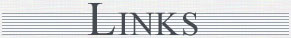

|
On The Internet I tend to read widely and sometimes indiscriminately. These are a few of the regular sites I visit for a challenging read. Keep watching this space as more will be added from time to time. Remember to hit your "Refresh" or "Reload" button to make sure you have the latest update! Each link opens in a new window for you so that you won't lose your place here. Simply close the window to return to this list - Enjoy! |

|

Content © 2012 Robin Howells
All rights reserved
original
design, layout and web authoring by